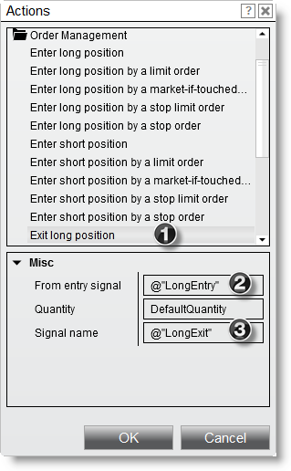

|
<< Click to Display Table of Contents >> Actions |


|
Actions
|
<< Click to Display Table of Contents >> Actions |
|
The Actions window allows you to select actions to execute for your script's conditions, for example executing an order or visualizing outcomes via draw objects.
 Understanding the Actions window
Understanding the Actions window
Strategy Action WindowThe Actions window allows you to select actions to execute. Actions are executed when a strategy condition is true. The Actions window can be accessed via the Conditions and Actions Builder screen.
Within a NinjaScript strategy you can invoke miscellaneous actions, submit various order types for entering and exiting market positions, and have access to various drawing methods as shown in the images below.
|
 How to enter a market position
How to enter a market position
Entering a Market PositionUsing the various Order management actions, you can enter a position using market, limit, market-if-touched, stop limit and stop market orders.
Following is an example and represents one of many possible combinations.
1. Expand the Order management category and select Enter a long position by a limit order 2. You can optionally set the number of contracts / shares for the order or leave the DefaultQuantity value which allows you set the quantity when starting a strategy 3. Set the *Signal name property to any user defined value to identify the entry (you can also leave this name blank) - here we used LongEntry 4. We can set the limit price dynamically by setting it to another item's value, press the "Set" button to open the Value window
*Signal names are important in that they are used as unique identifiers if you have more than one unique entry in a strategy. By providing unique entry signal names for each entry on a strategy, you can then identify which position you want closed via the exit position methods. Signals names are also used to identify executions on a chart visually.
5. Expand the Price category and select Bid 6. Set the Offset type to Ticks and enter a value of "-1" for Offset (see "How to offset an item value" section of the Condition Builder page of the Help Guide for more information)
Once the OK button is pressed, an action is created that would translate to the following:
"Enter a buy limit order at a price 1 tick below the current bid price to enter a long position" |
Exiting a Market PositionUsing the various Order management actions, you can exit a position using market, limit, stop market and stop limit orders.
Following is an example and represents one of many possible combinations.
1. Expand the Order management category and select Exit long position (exits via market order) 2. Set the From entry signal property to a named entry signal within the strategy (tied to our prior example, LongEntry is used). Providing a value will exit only the quantity associated to the position created by the named signal. Leaving it blank will exit the total net position. 3. Set the Signal name property to any user defined value to identify the entry (we use LongExit here, but you can also leave this name blank)

Once the OK button is pressed, an action is created that would translate to the following:
"Enter a sell market order to exit from entry signal 'Long Entry'." |
Drawing on a ChartUsing the various Drawing methods, you can draw lines, text, squares and more on a chart. You can review detailed information on supported drawing methods in the NinjaScript Language Reference section of this Help Guide.
Following is an example and represents one of many possible combinations.
1. Expand the Drawing category and select Diamond 2. Set the Bars ago parameter to "0" which will draw the diamond on the current bar x location 3. Set the Color parameter to any desired color 4. Set the Tag parameter with a user defined name that identifies this drawing object. Providing a tag is of value if you are going to draw more than one of the same draw type object (Diamond in this case) on the same bar. Per default the builder will set this to the script name plus the draw object type, pressing the "set" button will display the String Builder window that would let you customize this further. 5. Set the Y parameter to the "High" of the current bar plus one tick by pressing the "set" button (not seen below, but same concept as in step 4) to display the Value window
Once the OK button is pressed, an action is created that would translate to the following:
"Draw a red diamond above the high of the current bar plus one tick"
If you want to further customize the drawing object tag's used, then the String Builder will offer the following :
1. Select your string separator here, possible values are - ; : or blank (which is the default) 2. Enter custom text, or items from the Value window in the String fields 3. Press the "add" or "remove" buttons to add new string fields in or remove any of the currently added ones, the last filed will stay in any case, as a tag is needed for the object created.
For example if we added a 3rd string field in and added the Current bar from the Value window misc category, our drawing object would plot on each occurrence of the condition, so also for any historical triggers.
|